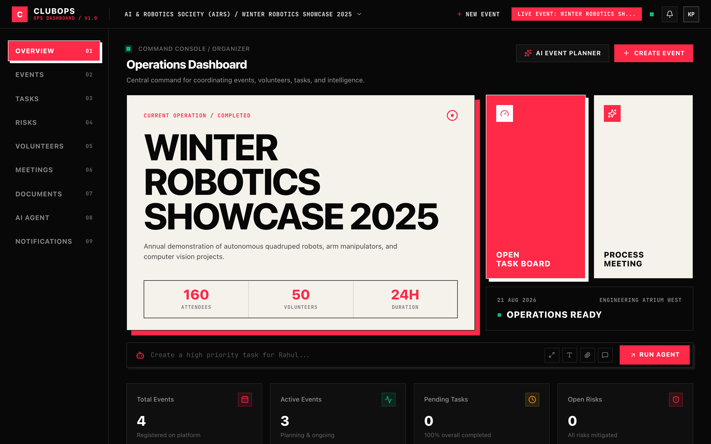
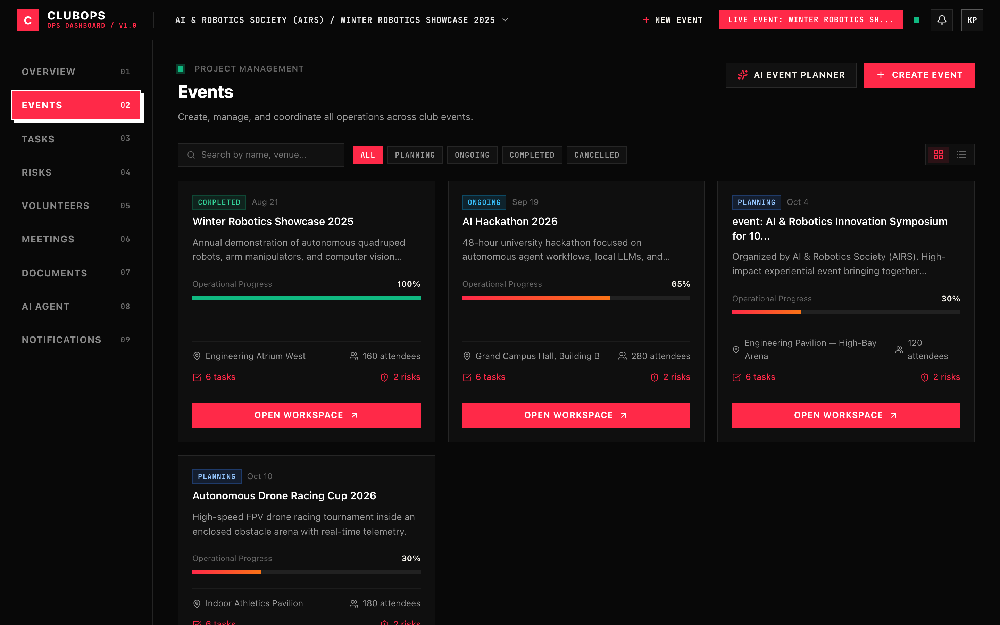
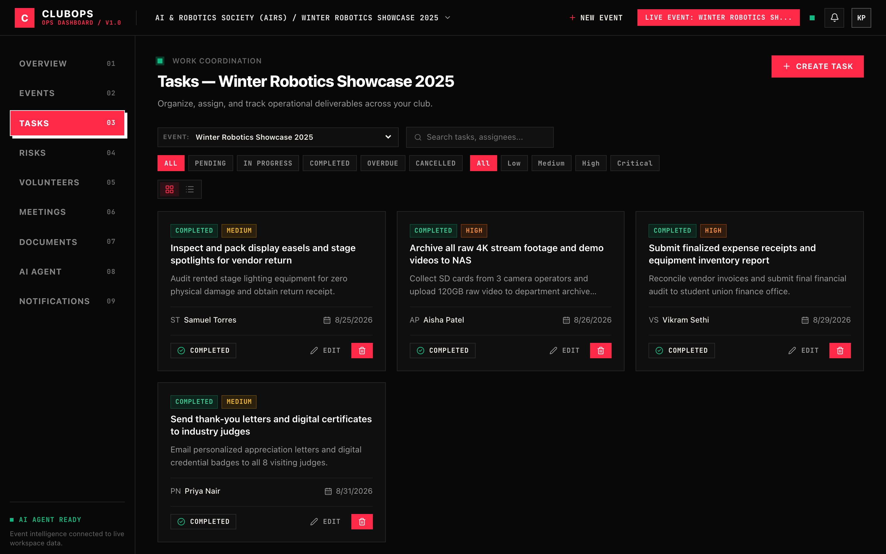
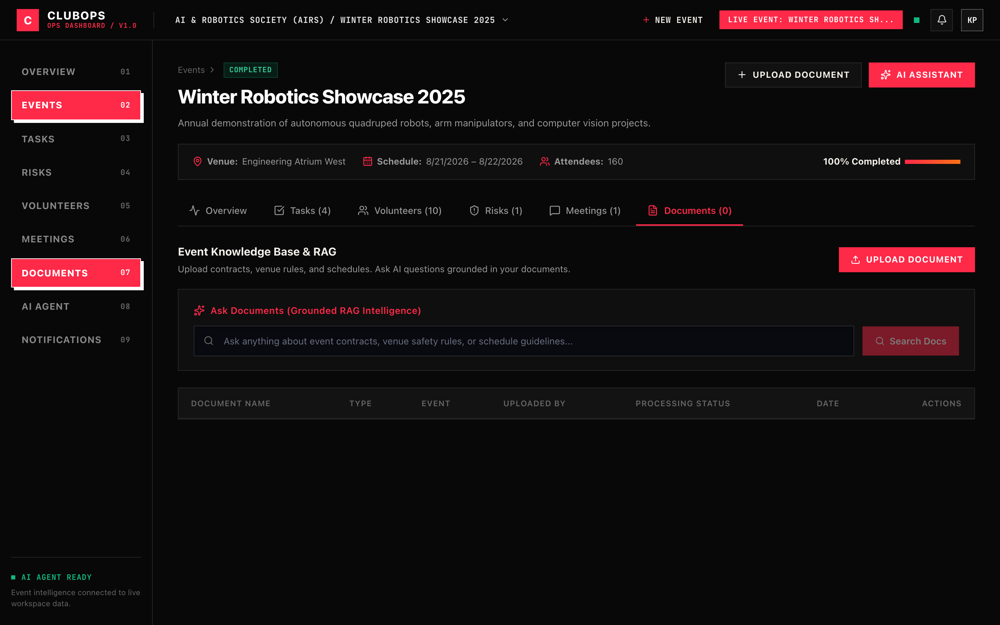
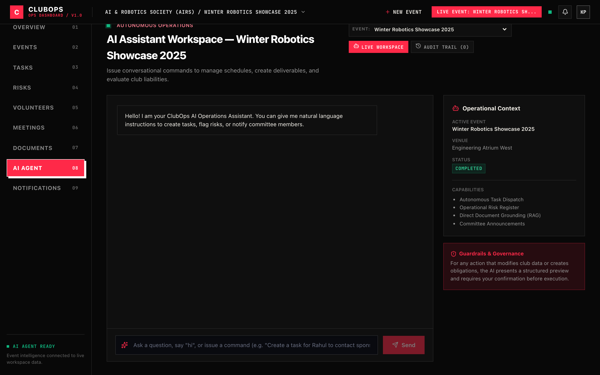
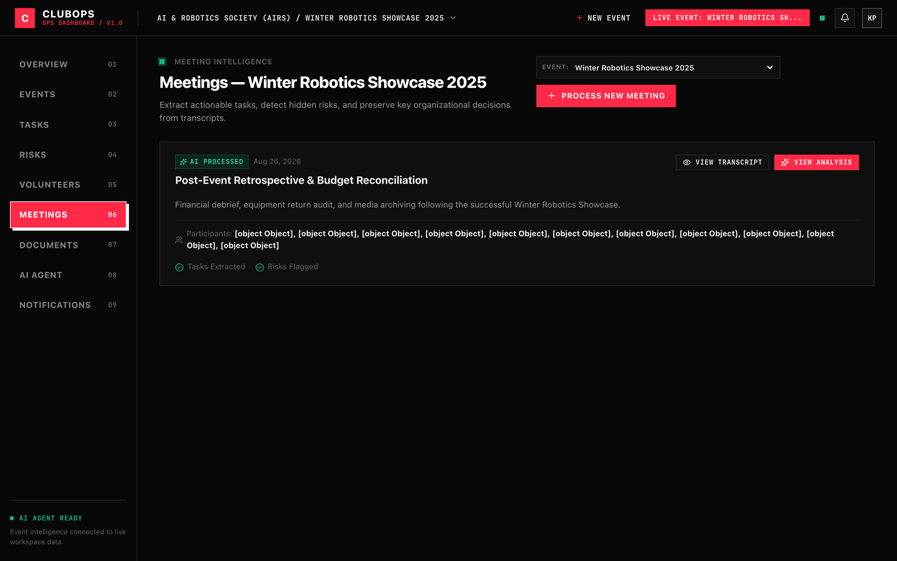

Autonomous Operations Platform for College Clubs & Campus Events
Problem Statement: AI-Powered Autonomous Club & Event Operations Platform • Team Leader: Krish Panchal
Conversational transcripts blend directives ('Aisha test stage lighting and David coordinate perimeter security'). Our engine uses regex and NLP delimiters to isolate compound clauses into discrete atomic actions before task creation.
Prevents volunteer burnout by analyzing active task counts across registered volunteers in MongoDB ($lookup aggregate). The router identifies domain specialists (AV, Security, Logistics) and assigns tasks to the least-loaded member.
Classifies tasks into CRITICAL, HIGH, MEDIUM, and LOW. Financial penalty bonds, equipment damage contracts, and stage power blockers trigger automatic escalation with countdown deadline tracking.
Replaced historic date bugs with parseTranscriptDeadline(), converting conversational strings ('by Friday 5 PM') into future ISO dates within the active year (2026), preventing century-old date distortion.



Displays AI-allocated tasks with 4-tier urgency tags (Critical, High, Medium, Low), assignee avatars, status pipelines, and search filters.

Multi-format knowledge repository (.pdf, .docx, .doc, .txt) with vector search, inline document text inspection, and grounded verbatim citation answers.

Translates natural-language commands into live database operations (task creation, status progression, risk logging, and broadcast dispatches) across 6 tools.

Instant transcript analysis that extracts executive summaries, decisions, action items, and automatically assigns tasks to least-loaded volunteers upon submission.
organizer@clubops.org | Password: password123 (Club Admin Role)http://localhost:5002 | Frontend UI: http://localhost:5173npm run demo inside /backend for instant full-flow verificationClubOps_AI_Bit_N_Build_2026.pptx | Web deck: presentation.html